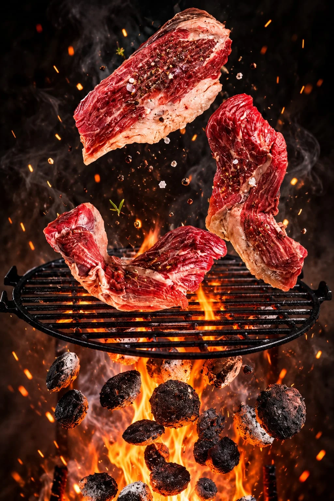
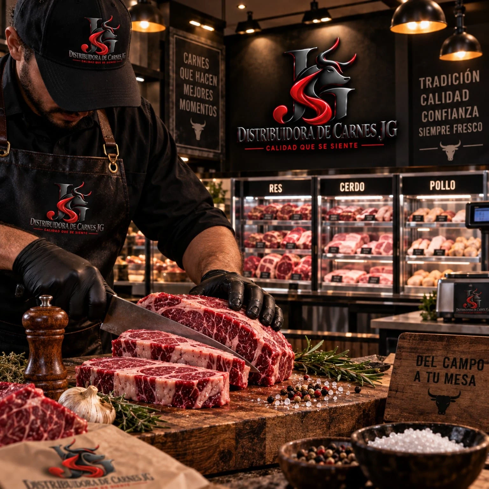
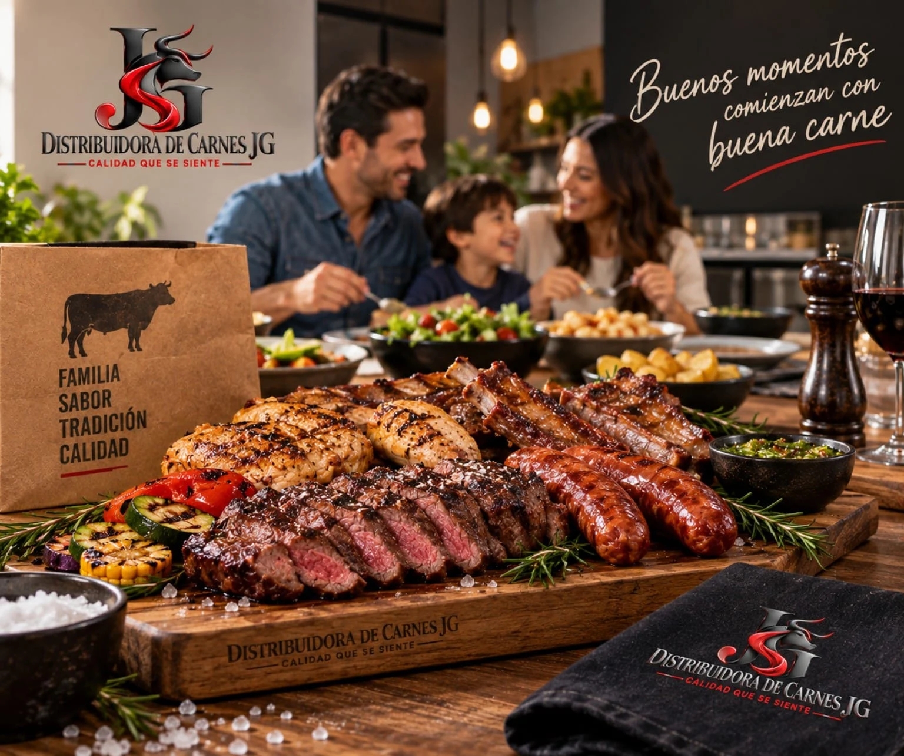

Qué estás buscando
Indica cuántos animales necesitas y qué características te interesan. Consulta el tipo de ganado, la edad y el peso aproximado de los animales disponibles.

Distribuidora de Carnes JG
Hay momentos que empiezan con una buena carne.
Y una buena carne empieza con JG.
Calidad que se siente.
También vendemos res viva.
UNA OPCIÓN MÁS CON JG
Además de nuestros cortes y combos, en Distribuidora de Carnes JG también vendemos res viva.
Cuéntanos qué estás buscando. La cantidad de animales, sus características y el lugar de entrega son el punto de partida para consultar esta opción.

PREPARA TU CONSULTA
Estos datos ayudan a plantear lo que necesitas y a confirmar las condiciones antes de decidir.
Indica cuántos animales necesitas y qué características te interesan. Consulta el tipo de ganado, la edad y el peso aproximado de los animales disponibles.
Solicita el precio de los animales que te interesan y confirma cómo se calcula. Revisa qué incluye la cotización y cuáles son las condiciones de pago.
Ten a mano el lugar y la fecha que necesitas. Confirma el punto de entrega o recogida, quién organiza el traslado y si tiene un costo adicional.
ANTES DE DECIDIR
La disponibilidad y las condiciones de cada compra deben confirmarse directamente con JG.
La fotografía es una imagen de referencia. Para conocer los animales disponibles, solicita información y fotografías actuales de la selección que te interesa.
El precio de res viva se consulta de forma individual. Indica la cantidad y las características que buscas para solicitar una cotización; no se aplican los precios de nuestros combos.
Disponibilidad, características del animal, valor total, forma de pago y condiciones de entrega o recogida. Confirma también si el transporte forma parte de la cotización.
EL SABOR TIENE UN RECORRIDO
De la frescura del corte a ese primer bocado.
Tú pones la ocasión. Nosotros, la carne.
Baja para recorrer la animación o elige una etapa con los botones.
LA SELECCIÓN PARA TU MESA
Res, cerdo, pollo y acompañamientos.
Explora cada combo y encuentra el tuyo.
Las fotografías son imágenes de presentación. Consulta el contenido de cada combo.

DISTRIBUIDORA DE CARNES JGNUESTRA ESENCIA
Una comida en familia. Un asado con amigos. Una mesa que se llena de buenos momentos.
En JG reunimos carnes de res, cerdo, pollo y mariscos en combos para que elijas lo que quieres llevar a tu mesa. También ofrecemos venta de res viva.
Cortes y acompañamientos en ocho combinaciones.
Conoce las cantidades y el contenido de cada combo.
El sello que acompaña a nuestra marca.
EL UNIVERSO JG
Imágenes de presentación de Distribuidora de Carnes JG.

BUENA CARNE. BUENOS MOMENTOS.